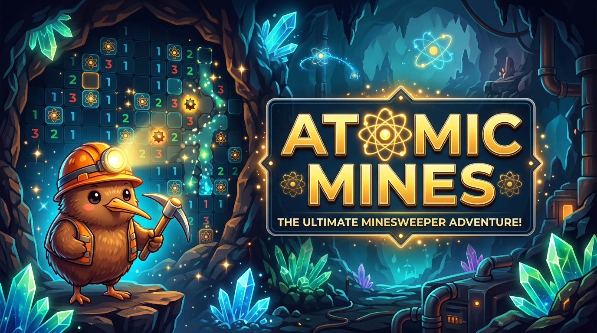

ATOMIC MINES
El clásico buscaminas reinventado con lógica matemática estricta y asistencia arqueológica. Cuando el tablero se bloquea en un dilema 50/50, Kiwiko el Minero te presta su pico para entrever por la rendija y resolver la partida con tu propio juicio.
Mecánica 50/50 Anti-Frustración
Un solucionador en tiempo real analiza el tablero. Si detecta una encrucijada matemáticamente ambigua, activa el modo arqueológico: golpea 3 veces la roca y deduce si hay una mina o un objeto seguro a través de la rendija.
5 Niveles de Excavación Minera
Desde el Yacimiento Superficial (9x9) hasta la desafiante Mina Abisal (16x30, 99 minas), con el nivel estándar equilibrado para móviles: Veta Subterránea (12x16).
Audio Táctil y Háptica Real
Efectos de sonido procedurales de ultra-baja latencia y vibración física en hardware para sentir cada golpe de pico, resquebrajamiento de roca y colocación de banderas.
Compromiso 100% Ético
Cero anuncios invasivos, cero microtransacciones abusivas y cero recolección de datos personales. El juego completo se disfruta sin interrupciones ni costes ocultos.